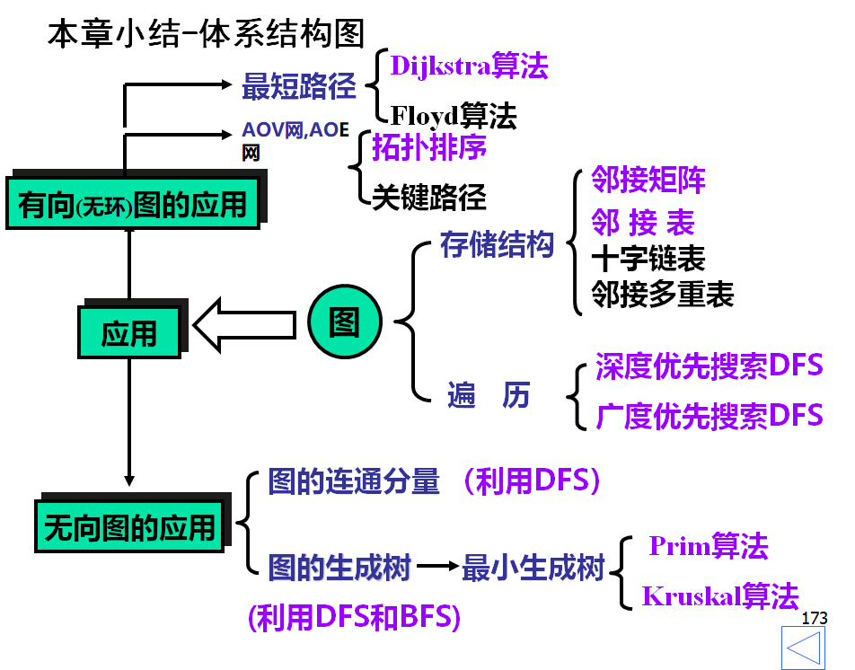
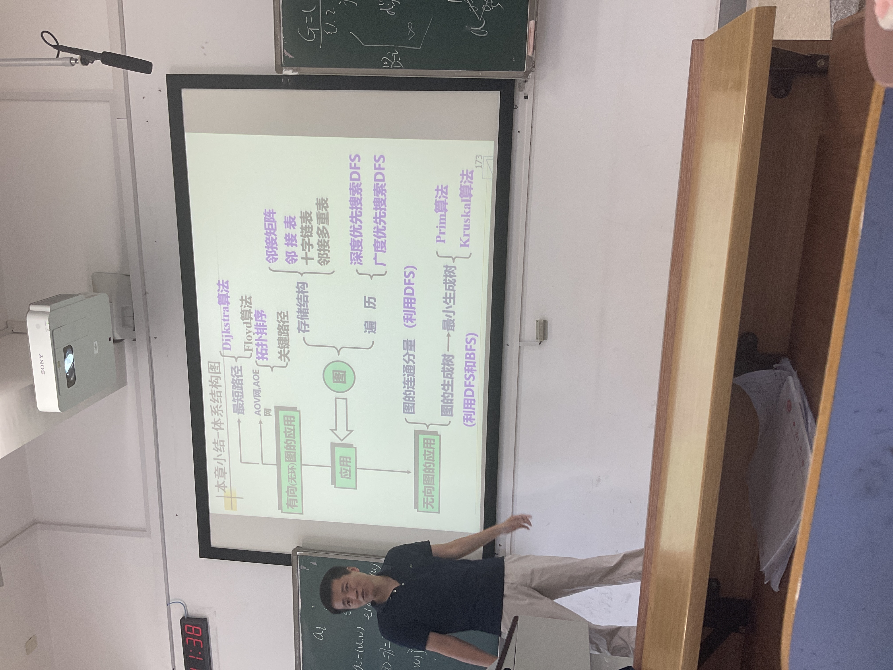

储存方式图的生成树和生成森林Elementary Graph Algorithms 遍历最小生成树 MiniSpanTreeShortest Path Problem 多源最短路线 All-Pair Shortest Path单源最短路径 Single-Source Shortest Path最大生成树？代价的计算方式不是和而是积化成log？Maximum Flow网络流Bipartite Graphs二分图Bipartite GraphGraph coloringTarjan算法 找强连通图Topological Sorting拓扑排序AOE图中心问题